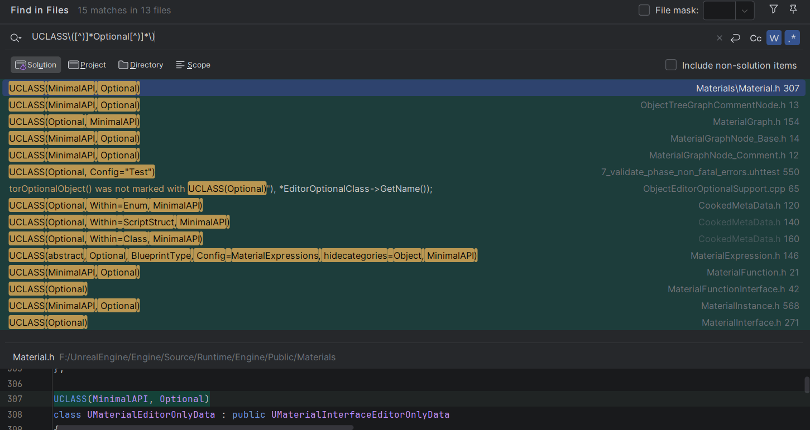
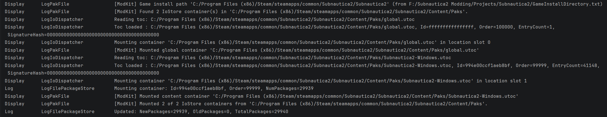
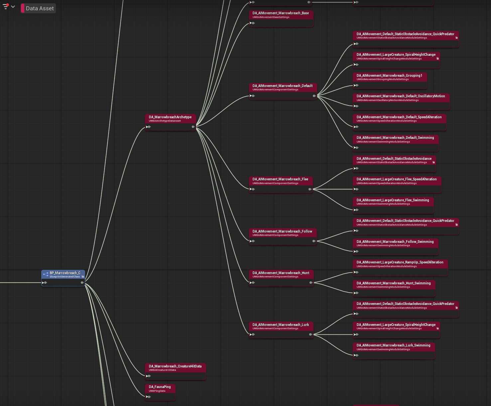
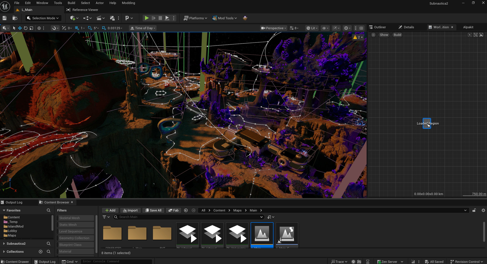
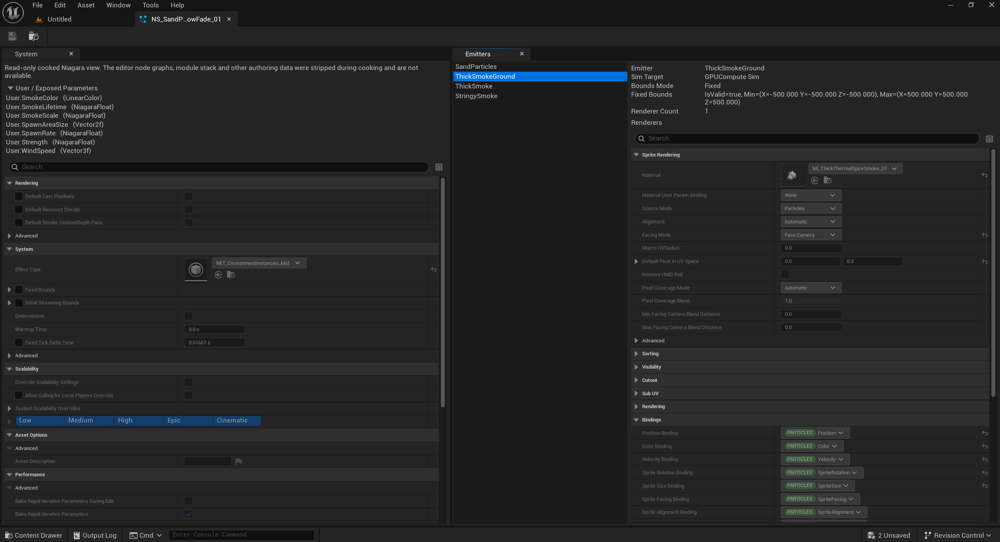
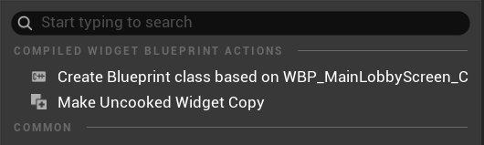
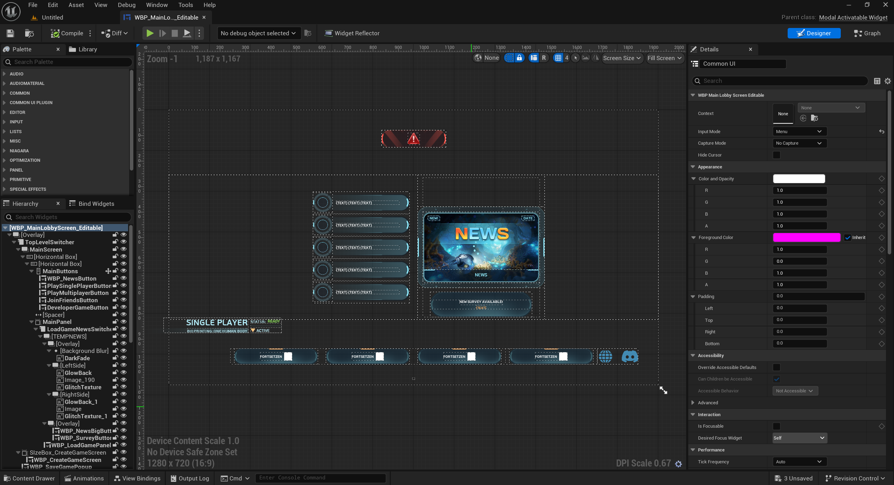
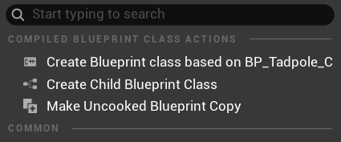
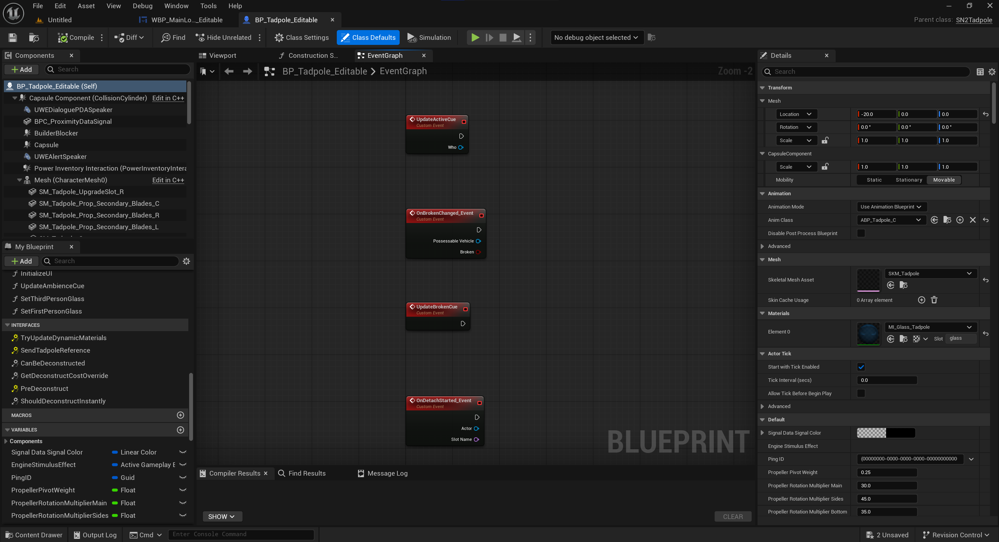
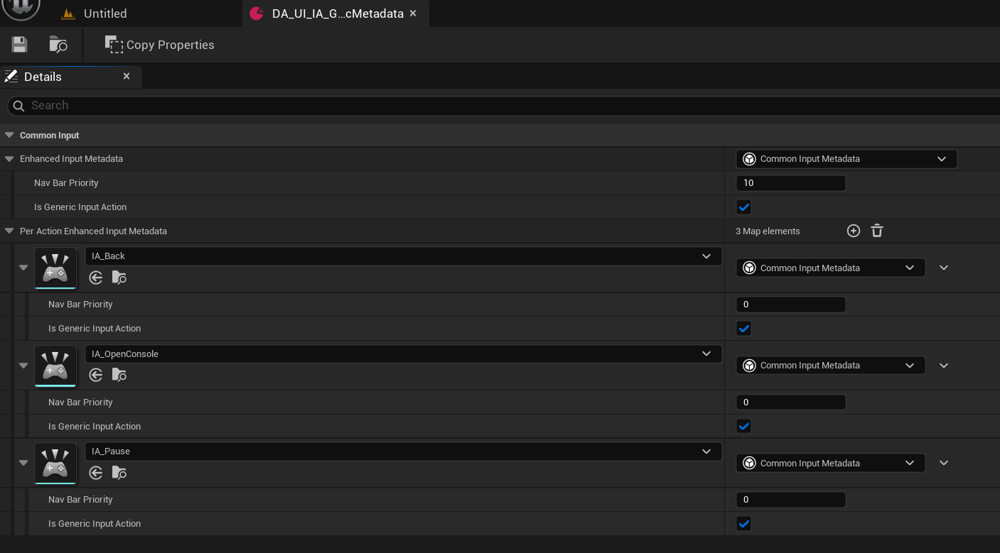

Cooked editor engine changes
As previously mentioned, due to the existence of UEFN, Epic Games have invested a lot into making the editor able to handle cooked content fairly well - and the later the engine version, the better it will be.
Without any engine changes, this is how Epic describes working with cooked content in the editor - it is quite limited (there are some hacky ways to make is not so bad, but it's annoying).
To maximise the potential of the cooked content in the editor, some engine changes will be necessary - but they are really not that complicated changes. Most of the changes are simply necessary to guard against editor code paths that aren't expecting cooked content.
Editor only data
In your research, you may notice some code mentioning "editor data", "editor only data" or WITH_EDITORONLY_DATA. As the name suggests, editor only data is enabled in the editor and disabled in the game, as it is used to control the code paths in the engine to seperate loading source assets and cooked assets.
You can enable this for your game so that packages are be cooked with all the extra metadata that the game itself doesn't need - most notably kismet graph data (rather than just the compiled bytecode) for blueprints, material shader code for materials, and niagara effect node definitions in niagara assets. I believe this exists again due to UEFN as it is enabled for that.
Editor only data does inflate the size of assets considerably, but it does give the obvious benefit that you can still use cooked editor while still having blueprint/material source code show up in the modkit!
Editor only data does not replace the need to make most of the engine changes below, so please keep reading on for that information.
Editor optional data
There is also the cooker parameter -editoroptional which, during cook, creates extra sidecar files containing optional information about the assets. This sidecar file takes on the form .o.uasset and if detected, is automatically loaded in the cooked editor by merging its optional information back in with the cooked asset.
By default, editor optional data only includes material editor data and asset metadata - those being controlled by the UCLASS macro containing the Optional flag, and the headers with metadata=.... There's not much that uses this by default, and I haven't looked into how much work it would be to add more asset classes to this.

As far as I understand it, the benefit of using this over enabling editor only data, is that in your actual game distribution, you can have editor data only for materials, without requiring either two seperate cooks (one for the game and another for the modkit) or without massively inflating the size of your game files.
Engine changes
I will explain each engine change I had to make in UE5.6.1 for the Subnautica 2 modkit - what they are and how they work. Your results will vary depending on the engine version, but that is for you to figure out. I will visit each topic in detail:
- Serialisation
- Mounting game containers
- Prioritise loading loose files over mounted containers
- Enable premade asset registry
- Populate the references viewer data
- Enabling all cooked blueprint references
- Allowing all cooked assets to be openable
- Loading cooked levels
- Loading the compiled shaders
- Miscellaneous small changes
- Extra utilities
At the time of writing (check the sn2-v.0.1.1.0 tag), the cooked editor is very stable as I was able to make mods referencing all kinds of asset types and having a bunch of assets open, for over 3 hours, without the editor crashing once.
Note that all modkit-related engine changes should be wrapped with WITH_EDITOR compiler guards in code that runs in both editor and game, so that the modkit changes don't exist in the game. While most of my engine changes are already doing this, one thing most changes are not taking into account (I only realised this after the fact) is operability between a modkit editor and a source/non-modkit editor. It may be that you choose to have your own editor for development contain these changes, but all of them disabled for your source assets - and then distribute it as a cooked editor when being used by modders.
Serialisation
When a cooked package is created, its binary structure is dependant off the sizes and offsets of the reflected properties of native class schemas. In UE5+, cooked content is additionally cooked as "unversioned", meaning that it does not contain any information in its header about how to parse the package. This saves a lot of space across all assets and reduces access time in the game as it does not need to spend time looking up the data in the header to get info about parsing the package - now the game can just directly load in data using the offsets known to it from the types in the engine.
If there is a mismatch of the format of the cooked asset binary, the game nor editor would be able to load it properly, as data would eventually shift out of alignment, thus allowing garbage data to be read into properties, leading to crashes.
All of this is to say, that for the editor to load the cooked packages correctly, your custom engine must also include all of the reflected class changes that you have made for your game.
In practicality, you should just include all engine patches for the modkit, not only for serialisation, but also so that shaders load in (more on this later) correctly, editor binaries work, etc. I'm also not really in a place to comment on your build system, but I would see it as much easier to just use the same engine build that the game itself uses for the modkit with the aforementioned compiler guards in place.
Mounting game content containers
So in the engine, there is an existing project startup command line flag -UsePaks. This flag allows you to directly mount container files to the editor.
Engine edit -UsePaks flag to always be enabled (optionally, flip it so that you can supply -NoPaks flag to disable mounting).
While the engine does already support mounting containers from within the project, there are a couple drawbacks:
- It expects the container files to be at a relative location to the engine install. You should change this behaviour anyway though, as if you are distributing an installed engine build seperately, then the user may choose to install the engine to a different location, thus causing it to break
- You would need to either distribute your modkit project already containing the game content (inflating download size massively) or have some utility to copy the game content from the game into the project location (extra hoops, slow to copy, duplicate data)
So what I did is to make an engine change to read in a txt file in the project root containing the path to the game install directory. It's a very simple to ask the user to supply the path manually during modkit setup, or if you had a method of reliably finding the game install location you could have such an algorithm in the engine change and then fallback to a txt file in case it fails.
Obviously if your containers use an AES key, you will need to supply that key to the IoDispatcherFileBackend->Mount call - but there really is no point in encrypting with AES because they are found in games in minutes or sometimes days if the developers have really tried to hide them.
This is an example of what my logging looks like on editor startup:

When reading through this change you may notice some code relating to load priority...
Prioritise loading loose files over mounted containers
In your project you may have some loose game files that work better as loose/source files than used as cooked files. Example of these in Subnautica 2 modkit:
- Source
.ufontfiles - (at least with IoStore) these do not resolve correctly as cooked files only as the ufont files are stored in a seperate container path, so I extracted the ufont files from the game's pak file and placed them directly into the project content folder under the correct directory path and names. If you just load them from containers, any widgets or text using the cooked font files will look like[A][A][A][A][A](missing font source). - FMOD banks - FMOD bank files are looked up as non UFS and as such are located as loose files in the game install folder, not in packaged containers. FMODStudio plugin then unpacks these banks at the first editor startup into the correct folders, as source assets. Therefore, the loose assets need priority over the cooked, non-working ones in the mounted containers (note that I did need to fix a bug in this copy process related to mounted containers here)
You may have other loose assets that you define in your project as "Directories to package as non UFS" such as movies, textures, animations, models (if using Interchange plugin pipeline). You may choose to either distribute these loose assets as part of the modkit download, or have them copied in from the game install files with some startup script.
Luckily, the engine already provides a way to do this: bLookLooseFirst. I hardcoded this to always be true in the editor as there is no reason for it not to be as far as I can tell.
Once you've made these changes, you may notice that there are no assets showing up in the content browser (aside from any loose ones)...
Enable premade asset registry
The content browser does not directly mirror the contents of packages on disk or mounted - instead, it builds a virtual view of the packages known to it at editor startup or when refreshed due to actions from content browser (such as creating, deleting or renaming an asset). Since loose assets are there on disk at startup, it can find these files immediately. However, since the mounting happens later in the engine init than the content registry read, it is missing all those in the mounted container.
Thankfully, again the engine already provides a neat way to to do this - an editor startup commandline flag -EnablePremadeAssetRegistry. This looks for an AssetRegistry.bin file in the project root and then loads up the content registry with all packages from it. Simply supply your game's AssetRegistry.bin file in the project with this flag and you should be able to see all cooked content in the editor. Make sure that the asset registry file that is in the project root is always the same version as from the installed game files - as otherwise it may show assets in the content browser that do not exist in the game or not show ones that do.
In this engine change, I do same as I did with -UsePaks -> -NoPaks flag - flip it to -DisablePremadeAssetRegistry so that bUsePremadeInEditor is true by default with the option to disable it if needed.
If there are still no cooked assets showing up in the editor, make sure you have these configs set in DefaultEngine.ini.
[/Script/UnrealEd.CookerSettings]
cook.AllowCookedDataInEditorBuilds=True
s.AllowUnversionedContentInEditor=1
I also found a bug that when deleting an asset in the content browser, the registry would refresh and "loose" all of the packages from the mounted container - because the refresh logic was simply only looking for packages on the disk - thus the cooked content would disappear. So to fix that I created a helper to check if an asset is from mounted container and then used it in the code paths related to regenerating the registry (also present in the same commit).
Populate the references viewer data (IoStore only)
The reference viewer is an extremely useful tool for modding as it makes it way easier to understand how the different systems connect together in the game. I'm sure you probably also find it useful sometimes!
By default, the reference viewer is only populated by the loaded loose/source assets. So when you open a cooked asset in it, there won't be anything connected to it.
When we mount the IoStore containers, we can specify to load it with soft references:
TIoStatusOr<FIoContainerHeader> MountResult = IoDispatcherFileBackend->Mount(*UtocPath, PakOrder, FGuid(), FAES::FAESKey(), UE::IoStore::ETocMountOptions::WithSoftReferences);
Then, when engine init is complete, we can populate the asset registry's dependencies graph with the references found in the headers of the IoStore containers. This is a very fast operation, because it's not loading any of the packages, just reading their headers.

Enabling all cooked blueprint references
This is arguably the most important part of modkit - when a modder is creating their blueprint logic, 99% of the time they will need to get references to a game asset, for example in:
- Casting
- Get all actors/widgets of class
- Getting/setting a property of a blueprint
- Calling a blueprint's function
- Binding to a blueprint's delegate
The main reason to provide a modkit is so that all the references for the mod are just there, readily available for the modder - no need for the modder to manually create dummy assets just to get their references.
In the vanilla engine, cooked blueprints are only referencable from blueprint code in asset list dropdowns such as on the get all actors of class dropdown. Any of the other referencing examples above aren't doable without an annoying workaround - creating a child blueprint of a cooked blueprint, which does a deep copy of the blueprint's component tree and saves it to an uncooked package on the disk. Since it's a child BP, defaults can still be accessed/modified as well as the copied component tree. However, it does not copy any of the properties, functions or events. So those still need to be manually dummied. Also, creating a child introduces some additional complexity in code as it's not actually the game blueprint they're referencing directly.
The fix for this turned out to be insanely simple - a single if statement change. In a nutshell, the code that builds the actions database (which is the stuff that appears in the context menu when you right click in a blueprint graph) was that the package's Class->ClassGeneratedBy property was never null (it is for cooked assets), thus was going down a code path that would silently fail. Once the change is made, the actions database is built using a seperate code path that doesn't rely on Class->ClassGeneratedBy and then simply works.
Allowing all cooked assets to be openable
By default, trying to open a cooked asset will lead to a notification message saying "Cannot modify cooked assets". Obviously this is not useful, so you need to change this to allow opening them.
First, disable the logic for the above check in the content browser (note that this change is commented out code, obviously you should be implementing it with proper checks etc).
Next, set bCanBeModified to true (additional change) for cooked packages. The reason for this change is so that in certain asset types, you can temporarily make changes to the asset in that editor session, for example:
- Experimenting with assigning different materials on a mesh (so modder does not need to spend the time testing it at runtime)
- Experimenting with assigning different skeletons or physics assets to skeletal meshes
- Assigning a skeletal mesh to an animation or vice versa - as sometimes this link is not set by default, depending on how the original project had it setup
It is important to note that any changes to the cooked assets are still temporary to that editor session - no data is written back to the cooked package - so all changes to them are lost on editor shutdown.
Once the changes have been made, the majority of asset tyes should be openable (with a caveat) without crashing, sound waves should be playable and overall the usefulness of the modkit has skyrocketed. The caveat is that most asset types that might have a graph view or viewport will open into a fallback asset editor that only lets you view and edit properties (it looks like a data asset view).
Loading cooked levels
Once all blueprints and other instancable actors are all opening without crashing the editor, you should now be able to open cooked levels that do not contain any landscape data.
But if you have any levels that do, you should fix the ability to open levels that contain landscape data. This is something some thought wasn't easy with cooked editor, as even in UEFN you cannot open cooked levels.
I spent time looking into it as it is extremely beneficial to allow the cooked levels to be openable:
- Modders can use them as references of where to spawn their mod actors at runtime (such as adding a new area in a level)
- They can be used to see existing actor instances - where they are, how they're configured etc.
- They can show actors that weren't previously noticed due to being invisible in-game, such as splines
- They can be copied to create entirely new levels based on existing game ones, as of course mods can load levels from blueprint
As it turns out, at least in 5.6, there are only two small changes necessary! Disabling world partition streaming and avoiding hash creation for weight maps as that data is stripped from the cooked asset.
Once these changes are done, all levels should be openable. However, as above, there is a major caveat: if a level is using world partition streaming, none of the partition regions will be loaded when you open it - you will only be able to view the persistent objects.
Something for you to experiment with (which I can't do as a modder) is to try copying in your uncooked levels as loose files and seeing if they all work fine? In theory, I think this should work perfectly without any of the above fixes required, as ultimately levels are either self-contained (landscape data) or contain references to assets in the project.
Fixing world partition streaming
Fixing world partition streaming for cooked levels is not a straightforward problem, because the engine code paths are not built for streaming in cooked landscape and packages - I don't think you can open levels that use world partition in UEFN, so Epic haven't coded this.
A cooked WP map doesnt't ship the editor's ActorDesc data that the normal editor loading path relies on. Instead it ships the runtime cells inside its RuntimeHash, each already carrying a pre created UWorldPartitionLevelStreamingDynamic that points at its generated cell package - you can check this in the FModel JSON output of a map's _Generated_/<hash>.umap file:
"Properties": {
"Model": {
"ObjectName": "Model'L_Main:PersistentLevel.Model_0'",
"ObjectPath": "/Game/Maps/Main/L_Main/_Generated_/00066UYU9N5IX2X34WNEUW1CF.1"
},
"LevelBuildDataId": "39A3D9D7-47E8360C-71D1029A-E2A29ABA",
"WorldSettings": {
"ObjectName": "WorldSettings'L_Main:PersistentLevel.WorldSettings'",
"ObjectPath": "/Game/Maps/Main/L_Main/_Generated_/00066UYU9N5IX2X34WNEUW1CF.6"
},
"WorldPartitionRuntimeCell": {
"AssetPathName": "/Game/Maps/Main/L_Main.L_Main",
"SubPathString": "PersistentLevel.WorldSettings.WorldPartition_0.WorldPartitionRuntimeHashSet_0.00066UYU9N5IX2X34WNEUW1CF"
}
},
It took a lot of work, but the change is to add in a new WP cooked cell streaming manager when the level is a cooked one. This watches the editor's WP region loader adapters (e.g. the "Load Region" boxes the WP minimap creates) and loads/unloads the intersecting runtime cells as streaming levels. It reuses each cell's pre cooked LevelStreaming and forces its standard loading path instead of the editor's ActorDesc assembly path. Honestly, most of the code is similar to how the existing engine's WP cell streaming works.
I only went as far as supporting the "Load Region" selection box adapter in the WP minimap, but you could also try to implement other streaming features that the engine also has. I find that manual selection is fine, because it takes a solid amount of time (20-30s) to load in a section of the Subnautica 2 map, so I didn't bother adding others.
There are also some additional fixes in the landscape code paths that do not typically expect to load cooked data that do not contain all information. Some of these issues are in the serialization override of the class, which assumes the package contains data it does not when cooked. This leads to serialization issues, and eventually crashing.
Here are the changes I had to make to get it to work for Subnautica 2:
-
Fix to cooked packed level actors missing level instance data (this one is probably not fixing the root cause of the issue, which is likely again serialization)
And the result:

Loading the compiled shaders
During project cook, shader code from materials are compiled into shader archive files, which are stored in the cooked containers at the root directory.
This means that the cooked materials themselves do not contain any of their shader information, which explains why all the cooked materials look just black or white or grainy in the editor.
This is not great because it doesn't actually show the modder what the material looks like if they are inheriting from a game material when writing their own shader code/playing with game material parameters - they would have to package their mod and load into the game to test - making iteration painfully slow.
So, it is possible to load in the compiled shader files from the mounted container, because the game already does that.
Due to the ordering of engine init, the shader library init is done before mounting the game containers. Therfore, the shader library is populated only with the engine information by the time mounting is done.
To workaround this, after the container mounting is done, the code opens the shader library, ready to receive the compiled shaders from the game - both the global shader map and the game ones. Note that since Subnautica 2 uses shader sharing (bShareMaterialShaderCode=true), all shaders not in global are in one file. If your game uses bShareMaterialShaderCode=false, compiled shader code is stored within each cooked material package. I'm not sure how this would work when populating the shader library - so you'll be on your own there.
Another thing important to note is that for mods to contain custom materials/shaders, the editor must have the setting bShareMaterialShaderCode=false - this is so that the mod's materials will contain the shader code to be loaded by the engine seperately from the game's central shader file, if the game itself uses bShareMaterialShaderCode=true. However, (again, if the game has it set to true), the shader loading code needs to know to load it from the central file - so in the engine patch, we disconnect the CVar value from that code, so the CVar is only used to determine the method of shader code storage during cook.
On post engine init, the shader library will read in the shader maps from the compiled shaders.
And as usual, I made it enabled by default but with the ability to be disabled with a startup flag -DisableCookedShaderLibrary.
I worked on this in groups for subnautica 2, as I found that it contains a large number of shader changes in the engine.
-
Matching the game's engine changes for your awareness. As a developer, you should not need to worry about this part
-
Many changes related to the game using both nanite and lumen shaders. I didn't write 90% of this engine patch, so I'm not really sure how it works.
-
Final patch is the correct time to load the compiled shaders into the shader library. You may notice that in my first set of changes, I thought that the best option would be to load the compiled shaders in when you first load a package that requires them. This caused a timing issue where the engine would push invalid shader code to the DDC, and then whenever the DDC was pulled from (could be when closing an asset view or loading another package), the editor would crash due to reading in garbage data.
Miscellaneous small changes
There are a bunch of additional small changes that need to be done to fix code paths that are not expecting cooked data - but please review all changes to check if they will apply to you, as well as any changes that may be different on older/newer engine versions than UE5.6.1.
-
This commit, this commit, this commit contains a few small changes (please ignore all the header changes, I was unprofessional here and committed unrelated changes together). I also apologise that I'm showing some changes that were later reverted, moved about and stuff, as this was active in development. It might be best to just check the diffs from here
- Allow cooked packages to be duplicated
- Allow user defined structs to load
- Fixes various issues loading animation based assets
- Downgrades some checks and fatal errors to ensures and non-fatal/warnings so that editor does not crash on serialization changes. Note: some of these changes should not be necessary as long as you are supplying your custom engine with all your engine patches for the game. Some other changes may still be necessary due to some code paths where serialization is done on the assumption that it is only looking through source packages, not cooked ones.
- Fixes to issues related to the limitations of Suzie, the tool I was using to generate the UHT class schemas in the project. If you are including source binaries, you should not have these problems either.
-
Reflect the
GameInstance.ReferencedObjectsproperty to blueprint to allow modifications to default objects to persist across level changes. See more here. -
Fixes opening sparse volume texture assets crashing the editor.
-
Fixes making a material instance of a cooked material wasn't populating the parameters.
-
Fixes bink plugin crashing when loading a cooked bink movie player
-
This commit removes the annoying "Do you want to apply LOD changes to this mesh?" prompt when closing a cooked static mesh asset viewer
-
Fixes bone weights recalculation causing a crash
Extra utilities
Since you are making engine changes anyway, it might be worth to add useful little utilities to help facilitate working with cooked content even better:
- Cooked niagara asset viewer
- Duplicate cooked widget to uncooked widget
- Duplicate cooked blueprint to uncooked blueprint
- Copy properties button in simple asset editor
Technically all of these can be implemented in editor plugins using the engine API, (aside from a couple of tiny engine patches to make them work properly) but I think that its much easier to implement them in the engine directly to avoid being limited by engine API without big changes required. That said, you may choose to still have them as plugins, as if there is a bug in the engine code, you will have to distribute a new engine version to push those, while a project plugin could be much quicker to iterate and distribute.
Cooked niagara asset viewer
While the engine already provides relatively solid code paths for viewing cooked content for most asset types, one type that (as of 5.6) has no read-only viewer is niagara effect. Like blueprints and materials, the editor-only metadata (such as kismet node graph) is stripped from cooked assets. So when you try to open this asset, it will just crash, as the editor only has code paths for trying to directly load its metadata as if its uncooked.
Therefore, I decided to take a page out of the read-only blueprint code by implementing my own read-only viewer for niagara assets. This viewer shows all of the properties of the asset as well of each effect created inside of it. This is useful for providing more easily obtainable info about the asset in the editor rather than having to rely on third party tools like FModel (which is also much harder to read/understand than in the editor) - for stuff like copying the effect's behaviours or to modify at runtime.

Create uncooked widget from cooked widget
When working with cooked widgets, you need to create a child to open it up to see what's inside (which is also uncooked), as otherwise opening it directly just shows the fallback asset editor view. In the case of widgets, since it's a child, you cannot see the original widget tree nor modify it.
So what would be nice, is to have an option to create a copy of it as an uncooked widget. This allows for much easier widget modding because:
- Mods can make their own widget using the basis or the styling of an existing game widget, without having to create and modify a copy of the game widget at runtime
- It's way, way easier to know how to modify a game widget at runtime if you can actually see the widget tree in the editor, as the alternative is to use UE4SS live viewer or SDK dumps which are not easy to read at all!
This engine change adds a button to the right click menu on a cooked widget in the content browser. At the top of the context menu, there is a "Make Uncooked Widget Copy" button which asks for destination folder and deep copies the full cooked widget tree and animations into an uncooked widget. Notice that I also needed to make a small engine patch to fix a bug relating to BindWidget properties - but you can ignore this as this is another limitation of Suzie which you will not be using.


Create uncooked blueprint from cooked blueprint
Similarly to widgets above, you can already create a child BP to see inside of it and you can at least see the component tree as that is copied across into the child. While this is technically enough information to "see" the blueprint (without just dragging it into the editor), the child BP method actually copies the component tree slightly inaccurately, in that I found some volume components are sized incorrectly.
The benefits of creating an uncooked blueprint are:
- The modder can directly view, in their "correct" positions, the components, interfaces, function bodies, events and variables that the blueprint uses. With this view, it's much easier to know what options they have when wanting to use or modify stuff in the game's blueprint
- For blueprints with no or very little code, a mod can copy a blueprint as a base to modify (rather than doing it at runtime) or even use it to implement their own logic in it, for example if they want to add a new buildable that's similar in design to an existing game's one, and has its own custom logic inside
This engine change adds a button to the right click menu on a cooked blueprint in the content browser. At the top of the context menu, there is a "Make Uncooked Blueprint Copy" button which asks for destination folder.


It could even be possible to reconstruct the kismet graph code from the script bytecode, though many have tried in the past to do it from script bytecode JSON produced by FModel, but as its a lot of work it has not been achieved accurately before (I say accurately, because there is a plugin that does reconstruct some code, but it's horrendously inaccurate and not worth using). If you want to include blueprint code, you may as well just keep the source blueprint assets in your modkit project, or use editor only data.
Copy properties button
This isn't really necessary, but when I was trying to figure out how to mod something in the game, I felt that I really needed a way to copy properties in the simple asset editor to my clipboard for easier viewing of the data (without expanding all dropdowns for example) would be useful. So I built one.
For example:

Copies to this:
Begin Object Class=/Script/CommonUI.CommonMappingContextMetadata Name="DA_UI_IA_GenericMetadata" ExportPath="/Script/CommonUI.CommonMappingContextMetadata'/Game/Data/DA_UI_IA_GenericMetadata.DA_UI_IA_GenericMetadata'"
Begin Object Class=/Script/CommonUI.CommonInputMetadata Name="CommonInputMetadata_0" ExportPath="/Script/CommonUI.CommonInputMetadata'/Game/Data/DA_UI_IA_GenericMetadata.DA_UI_IA_GenericMetadata:CommonInputMetadata_0'"
End Object
Begin Object Class=/Script/CommonUI.CommonInputMetadata Name="CommonInputMetadata_1" ExportPath="/Script/CommonUI.CommonInputMetadata'/Game/Data/DA_UI_IA_GenericMetadata.DA_UI_IA_GenericMetadata:CommonInputMetadata_1'"
End Object
Begin Object Class=/Script/CommonUI.CommonInputMetadata Name="CommonInputMetadata_2" ExportPath="/Script/CommonUI.CommonInputMetadata'/Game/Data/DA_UI_IA_GenericMetadata.DA_UI_IA_GenericMetadata:CommonInputMetadata_2'"
End Object
Begin Object Class=/Script/CommonUI.CommonInputMetadata Name="CommonInputMetadata_3" ExportPath="/Script/CommonUI.CommonInputMetadata'/Game/Data/DA_UI_IA_GenericMetadata.DA_UI_IA_GenericMetadata:CommonInputMetadata_3'"
End Object
Begin Object Name="CommonInputMetadata_0" ExportPath="/Script/CommonUI.CommonInputMetadata'/Game/Data/DA_UI_IA_GenericMetadata.DA_UI_IA_GenericMetadata:CommonInputMetadata_0'"
NavBarPriority=10
End Object
Begin Object Name="CommonInputMetadata_1" ExportPath="/Script/CommonUI.CommonInputMetadata'/Game/Data/DA_UI_IA_GenericMetadata.DA_UI_IA_GenericMetadata:CommonInputMetadata_1'"
End Object
Begin Object Name="CommonInputMetadata_2" ExportPath="/Script/CommonUI.CommonInputMetadata'/Game/Data/DA_UI_IA_GenericMetadata.DA_UI_IA_GenericMetadata:CommonInputMetadata_2'"
End Object
Begin Object Name="CommonInputMetadata_3" ExportPath="/Script/CommonUI.CommonInputMetadata'/Game/Data/DA_UI_IA_GenericMetadata.DA_UI_IA_GenericMetadata:CommonInputMetadata_3'"
End Object
EnhancedInputMetadata="/Script/CommonUI.CommonInputMetadata'CommonInputMetadata_0'"
PerActionEnhancedInputMetadata=(("/Script/EnhancedInput.InputAction'/Game/Gameplay/Input/IA_Back.IA_Back'", "/Script/CommonUI.CommonInputMetadata'CommonInputMetadata_1'"),("/Script/EnhancedInput.InputAction'/Game/Gameplay/Input/IA_OpenConsole.IA_OpenConsole'", "/Script/CommonUI.CommonInputMetadata'CommonInputMetadata_2'"),("/Script/EnhancedInput.InputAction'/Game/Gameplay/Input/IA_Pause.IA_Pause'", "/Script/CommonUI.CommonInputMetadata'CommonInputMetadata_3'"))
End Object
Monolithic editor
A monolithic editor is when the entire engine and project are built into a single executable. This is what UEFN uses as it is then much easier to distribute - with the downside that every time the game updates, the entire executable needs rebuilding and updating, whereas with a standalone editor and engine, the engine may not need to be redistributed if it has not changed since the last version.
That being said I have not tried it and know nothing about how it works or is created, so I am just mentioning it as a potential research point. I have also heard that a modder once created a monolithic build for a UE4 cooked editor project but they deleted the code so I can't verify if that was really the case.